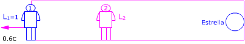
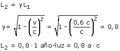
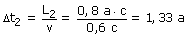

El rectángulo representa un recinto que se mueve respecto al observador 2 (Nave) con velocidad 0.6c. El observador 1, la Tierra y la estrella están dentro del recinto  Observador 1 (Tierra): Observador 2 (Nave) Aplicando la conversión de longitudes:  Vista por el pasajero de la nave la estrella està a una distancia de 0.8 años-luz y se acerca a una velocidad 0.6c. Tardará en llegar:  |